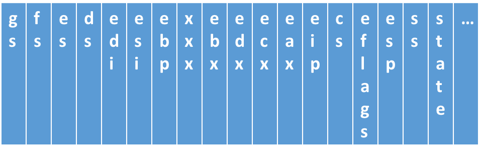

☞☞☞Lab3 PPT☜☜☜
typedef struct p_pcb{
stackframe segs;
unsigned int k_stack[STACKSIZE];
...
}
或者其他你认为正确的方式, 这样你就无需切换固定的内核栈了.
具体实验步骤
fork() 系统调用创建子进程exit 系统调用结束运行, 返回内核(线程)具体要求
fork 出一个子进程, 父进程循环打印"Ping", 子进程循环打印"Pang"sleep一定时间(例:1秒)exit我们使用 8253 可编程计时器/定时器芯片来产生时钟中断, 这部分内容不需要你详细了解, 你只需要在初始化内核的时候加入下面的代码即可
#define TIMER_PORT 0x40
#define FREQ_8253 1193182
#define HZ 100
void init_timer(void) {
int counter = FREQ_8253 / HZ;
assert(TIMER_PORT < 65536);
out_byte(TIMER_PORT + 3, 0x34);
out_byte(TIMER_PORT + 0, counter % 256);
out_byte(TIMER_PORT + 0, counter / 256);
{变量 HZ 表示的是中断的频率, 然后为时钟中断设置中断处理程序即可.
从理论课上讲两者的区别在于:
这告诉我们, 从调度的角度来看, 进程和线程没有任何区别. 为了让进程参与调度, 它同样需要一个PCB. 在实验中, 内核线程和内核共享同一个地址空间, 这意味着不同的线程可以相互访问对方的数据(甚至是堆栈! 但这通常代表你编写了错误的代码); 与线程不同, 进程还需要拥有自己的地址空间, 这是因为不同进程之间是独立的, 它们不应该相互干扰.
除了地址空间以外, 进程还拥有其它资源, 随着实验进度的推进, 更多的资源将会被添加进来. 目前只要我们给用户进程正确地创建了PCB和地址空间, 用户进程就可以运行了.
在真实的操作系统中, 进程(也就是 Lab2 中的用户程序)的代码和数据来源于程序的可执行文件, 它们需要从磁盘载入到内存, 进程才能运行. 我们在Lab2中实现这个过程, Lab3将在Lab2的基础上创建新的进程，但与Lab2中创建进程的方法不同，Lab3将采用fork()系统调用创建第二个进程。下面是一个在内核中使用 fork 创建父子线程的例子, 这两个父子线程间将共享数据, 不同的线程可以对同一个数据进行操作.
volatile int x = 0;
int result = 0;
void A() {
int i = 0; // different "i"
while(1) {
if(i % 10000 == 0) {
x ++; // the same "x"
}
i ++;
}
}
void B() {
int i = 0; // different "i"
while(1) {
if(i % 10000 == 0) {
printk("%d", x); // the same "x"
}
i ++;
}
result = fork();
if(result == 0)
{A();}
else
{B();} 在Lab3中, 我们需要在内核中创建一个 IDLE 线程, 用于在没有就绪态的进程时的调度. 此外, 我们的用户程序 fork 出的子进程将不与父进程共享地址空间, 而是将父进程的代码,数据,堆栈等信息复制到另一块空间.
实际上, 上下文切换和调度这一过程并不会区分进程和线程, 它们都是统一起来进行切换和调度的, 因此我们在实验中还是使用PCB的概念.
Process Control Block(PCB) 是为了描述控制进程的运行, 在系统中存放进程的管理和控制信息的数据结构, 每个进程都有一个 PCB, PCB 将伴随进程的诞生, 运行, 直到进程撤销. 那么 PCB 具体会拥有哪些内容呢? 首先我们先来回忆一下一个进程的生命周期
一个进程在就绪态(Runnable)下获取了 CPU 资源就会转入运行(Running)状态下, 遇到 IO 阻塞或自主 sleep 时会进入阻塞状态等等, 因此我们需要有一个值来标识进程的状态
int state;一个进程在运行满一定周期的 CPU 时间后会将控制权还给调度程序, 如何判断当前时间将发生进程调度呢? 假设你采用了时间片轮转调度算法, 那么可以为每个进程分配一次调度的运行时间周期, 比如10个时钟中断, 在运行时间满后将控制权交给调度程序, 如此, 你需要有一个时间片来表示当前进程的可运行时间
int time_count;你应该会在进程中调用sleep 系统调用, 为了实现进程的睡眠, 你应该需要在 PCB 中标识出该进程的苏醒倒计时;
int sleep_time;不管你使用何种方式实现睡眠, 调度以及状态识别, 你总需要在 PCB 中标识出一个进程的进程体, 因为你需要在进程调度时, 从 PCB 获取进程上次调度所保存的运行状态, 以便进程能够正确地继续执行. 那么, 问题来了, 进程的哪些状态需要被保存?
要回答这个问题, 我们先换个问题问一下, 为什么要保存这些状态? 那当然是为了到时候恢复进程嘛, 所以不会被改变的状态保存了也是无用功, 只有可能会被改变的状态才有保存的必要. 我们的进程在运行, 无非是 CPU 和内存的相互协作, 我们提过在保护模式下不同进程的内存互不干涉(假设内存足够大), 但是我们也提到我们是单核 CPU, 不同进程共用一个 CPU 的一套寄存器, 因此我们要把寄存器的值全部保存起来, 进程恢复的时候就靠这些寄存器来恢复. 我们为了方便说明, 在后文中以 "进程状态表" 来指代"保存进程状态的那个东西".
进程状态表是怎样的呢? 我们先给出它的数据结构, 稍后再做详细的介绍以及为什么要如此组织
typedef struct p_process_table{
uint32_t gs, fs, es, ds;
uint32_t edi, esi, ebp, xxx, ebx, edx, ecx, eax;
uint32_t eip, cs, eflags, esp, ss;
}stackframe;有了这些内容, 详细你可以很容易构造出一个 PCB 来, 应该也足以完成本次的实验了, 如果觉得这样不够完美, 你还可以添加一些额外的内容:
typedef struct p_task_table{
stackframe regs;
int state;
int time_count;
int sleep_time;
unsigned int pid;
char name[32];
...
}PCB;
PCB pcb_table[MAX_PCB];当然, 你也可以使用链表的形式来初始化 pcb_table, 双向链表亦佳.
有了PCB之后, 我们就可以在不同的进程之间进行调度了. 内核通过维护一个全局指针current来指示当前运行的进程, 调度的工作就是选择一个就绪的进程作为上下文切换的目标.
void irq_handle(TrapFrame *tf) {
swtich(tf->irq)
{
case 1000:
//irq = 1000 假设表示时钟中断
if（current->time_count == 0）//进程的时间片到期
{
schedule();//调度算法
}
break;
case ...
...
}
}这时候你发现好像之前提到的进程状态表还没有被用到, 那从这里开始, 我们将讲解在 lab3中, 进程调度发生(也就是时钟中断发生)时, 我们所需要做的工作. 首先, 我们回顾一下 lab2中断发生时的动作(假设通过了权限检查):
此时, 栈的内容是这样的
在 lab2里, 我们将 tss0设成了一个固定的值, 或许你设成了内核栈, 或许你重新启用了一块空余的空间, 但是在 lab3里, 你将面临堆栈切换的问题. 我们在lab2中使用 iret 指令进行中断返回, 因为我们知道在栈中恰好保存了用户程序的运行状态(的一部分), 但是当进程发生调度时, 比如由进程 A 切换为进程 B 时, 我们就需要使用进程 B 的运行状态来返回到 B 的地址空间. B 的运行状态在哪呢? 答案是在 pcb_table 里.
我们将 PCB 的数据结构展平了看一下 
可能不太清楚, 所以我们再竖起来看一下
是不是清楚一点了呢, 这个表的上面是高地址, 下面是低地址, 绿色部分是不是很像之前中断发生后内核栈的样子? 这里就是用来返回进程地址空间的进程状态. 在 lab3 中, 基本上没发生一次中断都需要你操作至少三个栈
当然这只是从中断进入内核你所需要做的工作, 那么从内核回到用户空间时要做的自然是反方向的啦, 我就不再详细描述了. 重点提一下 tr 寄存器里的 esp0 值这时候应该指向当前切换的进程的进程状态表栈顶.
说了那么多进程切换的细节, 那要如何选择下一个就绪线程呢? 这就涉及到调度策略, 目前只需要采用轮转调度(Round Robin)的策略即可, 即依次调度线程1, 线程2, ..., 线程n, 线程1...
Linux采用多级队列调度的策略, 为每一个线程设定一个优先级, 调度时选择所有就绪线程中优先级最高的线程进行调度, 这样可以保证一些请求能够尽快得到响应. 有兴趣的同学可以在以后实现这个调度策略.
最后要提一下IDLE线程. 当没有其它就绪线程可以进行调度的时候, 系统应该选择IDLE线程进行调度. IDLE线程什么也不做, 等待下一次中断的到来. 在实验中不需要手动创建IDLE线程, 还记得系统启动的执行流吗? 执行流在bootblock中加载并跳转到内核, 然后执行一系列的初始化工作, 等到初始化结束后将会打开中断, 此时执行流摇身一变, 成为了实验中的IDLE线程, 等待中断的到来.
while(1)
wait_for_interrupt();wait_for_interrupt();调用了hlt 指令, hlt 指令会使 CPU 进入暂停状态, 直至中断响应.
我们已经载入了第一个用户进程了, 并且为它提供了一个简单的系统调用进行输出. 接下来我们需要实现一些与进程管理相关的系统调用, 为用户进程提供更好, 更强大的服务.
在类Unix操作系统中, fork是创建新进程的唯一途径. 你应该对fork的作用十分熟悉了, 但在这里, 我们要关注fork的实现. fork的作用是创建一个"一模一样"的子进程, 准确来说, 除了PID外都与父进程一模一样, 包括状态和资源. 说白了, fork做的事情就是状态和资源的复制: 对照父进程的PCB, 父进程有什么, 子进程就要有什么.
千万别小看了"复制"二字, 里面总是暗藏杀机. 举个C语言初学者都犯过的错误:
char s[20] = "Hello world!";
char t[20], *p = t;
// now copy string s to the memory pointed by p
p = s; // wrong
strcpy(p, s); // right上面的错误做法将指针p直接指向字符串s, 表面上看p与s"一模一样", 但它们指向的并不是独立的内存空间, 通过p改变了字符串的内容, 通过s也能够读出, 反之亦然. 事实上, 这样的做法实现的并不是复制, 而是共享. 正确的做法是使用字符串复制函数strcpy, 将s中的每一个字符都复制到p所指向的内存空间中. 这就是浅拷贝与深拷贝的区别.
因此, 实现fork需要解决的核心问题, 就是弄清楚如何处理PCB中的每一个域: 浅拷贝, 深拷贝, 清零, 重新分配, 还是要做特殊处理. 最后是返回值的设置, 我们需要将子进程的tf->eax设置成0, 将父进程的tf->eax设置成子进程的PID即可.
sleep系统调用应该也不用我多说了, 目的是为了让进程陷入阻塞(睡眠)状态, 到达一定时间后再将其唤醒, 下面这个函数其实可以完美解决这个问题
void sleep(int time){
unsigned int i = 0, j = 0, k = 0
for (;k < time;k++){
for (;i < 100000;i++){
for (;j < 100000;j++){}
}
}
}不过这并不符合要求, 同时也会因为编译器优化而失去效果, 在这里特别提醒一下, 这样实现是不可取的. 我们在 PCB 中添加的 sleep_time 变量可被用来计算进程的睡眠时间, 达到这一时间后, 进程将被唤醒, 同样, 你也可以尝试使用别的方案.
一个进程撤消的方式有很多, 仔细想一下, 可以有以下几种:
})return)exit)这里, 我们要实现的就是一种自我毁灭式的撤消, 进程撤消的方法就是进程创建的反步骤, 同时要释放其所占用的空间, 将其存在从操作系统中抹去, 作为本次实验最终要调用的系统调用, 我得在次提醒一下, 在两个pingpang 进程各自自杀之后, 内核需要有一个IDLE线程无限循环等待, 为了验证其正在运行, 推荐你也输出一下 IDLE 正在运行的信息.
本次实验没有框架代码, 请于 lab2 基础上进行实验.
实验提交要求同 lab1, 最后附上 linux 之父 Linus Torvalds 的一句话
Talk is Cheap,
Show Me the Code!